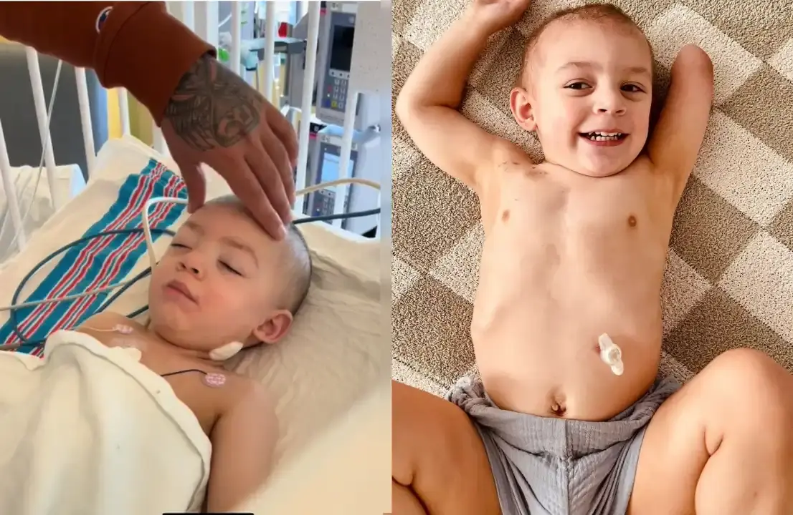
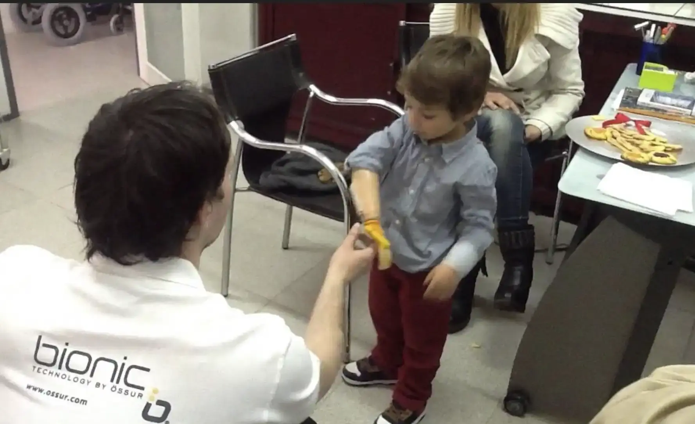

A Doença do Rato fez meu filho perder o braço. Agora ele só pensa em morrer. Ajude o Ismael.
 117 corações recebidos ❤️
117 corações recebidos ❤️
O braço do meu filho apodreceu em quinze dias.
Foi mais uma das tragédias causadas pelas enchentes que devastaram o Rio Grande do Sul em abril de 2024 - mas dessa, ninguém fez reportagem.
Meu nome é Sandra e sou mãe do Ismael, esse garotinho lindo de 7 anos.
Ontem, enquanto arrumava a cama dele, encontrei um desenho escondido embaixo do travesseiro.
Era ele mesmo, rabiscado com a mão esquerda. No desenho, ele tinha dois braços.
"Mãe... será que um dia eu vou poder abraçar alguém sem ter vergonha?"
São essas perguntas que me fazem chorar escondida no banheiro toda noite.
A enchente levou não apenas a nossa casa em São Sebastião do Caí - RS, mas também algo que dinheiro nenhum pode comprar: o braço do meu filho.
Tudo começou num corte pequeno, quase insignificante.
Na correria pra fugir da água que invadia nossa casa, o Ismael esbarrou numa cerca submersa.
Com tanta gente gritando por socorro, tantos vizinhos perdendo tudo, aquele cortezinho pareceu o menor dos problemas.
Eu vi na hora e limpei, fiz um curativo improvisado e seguimos em frente.
O posto de saúde tava debaixo d'água.
O hospital mais próximo, a 40 km, transbordava de desabrigados.
Não tínhamos carro. Não tínhamos ônibus. Não tínhamos nada além da roupa do corpo e da certeza de que aquele corte era o menor dos problemas.
No segundo dia, veio a febre.
"É só um resfriado da chuva", eu disse pra mim mesma.
Dei dipirona e continuei acreditando que ele ia melhorar.
No quarto dia, o braço dele inchou.
No sexto dia, quando finalmente conseguimos carona até o terceiro hospital que tentamos, o cheiro já era de morte.
"Por que não trouxe antes?", perguntou a médica.
Como explicar que andamos quilômetros na lama?
Que imploramos por ajuda em dois hospitais lotados?
Que passei noites em claro vendo meu filho delirar de febre num colchão emprestado?
O diagnóstico veio como uma sentença: leptospirose, contraída através do corte.
A bactéria da água suja provocou algo chamado "fasceíte necrosante". Em palavras simples: o braço do meu filho estava morrendo.

Vi a morte subir pelo braço dele como uma linha escura. Primeiro ficou roxo, depois preto.
O cheiro... meu Deus, o cheiro era como carne podre num açougue abandonado.
Doze cirurgias em quinze dias. Os médicos cortavam um pedaço, esperavam, cortavam mais.
A infecção não parava. Até que o Dr. Paulo entrou no quarto chorando:
"Sandra, se não amputarmos agora, a infecção vai se espalhar. Seu filho tem 24 horas de vida."
Assinei a autorização com a mesma mão que antes fazia cafuné naquele braço que agora precisava ser cortado.
Começamos nossa busca por ajuda em todos os lugares possíveis.
O SUS oferece próteses básicas, mas são rígidas, sem movimentos naturais - como um pedaço de plástico preso ao corpo.
Mas mesmo essas próteses eu solicitei e não recebi resposta.
A Secretaria de Saúde tem uma lista de espera de dois anos.
Foi quando descobrimos a Bebionic Child.
A única prótese que devolve os movimentos precisos para uma criança.
É a mesma tecnologia usada por cirurgiões pra operar à distância, adaptada para devolver a independência a crianças como o Ismael.
Mas cada dia que passa é um dia perdido.
A médica explicou:
"Existe uma 'janela de oportunidade' para o cérebro se adaptar à prótese."
"Se esperarmos muito, o cérebro do Ismael vai 'desaprender' os movimentos do braço - e ele pode nunca mais conseguir usar uma prótese adequadamente."
O Ismael de antes desenhava planetas e foguetes. Sonhava em ser médico "pra consertar as pessoas machucadas, igual o doutor consertou a vovó".
Agora, ele se esconde pra comer no banheiro da escola. Os colegas chamam ele de "aleijado". Semana passada, encontrei um bilhete no caderno dele:
"Queria que a água tivesse me levado junto".
Meu filho tem 7 anos e já pensa em morrer.
A prótese Bebionic Child custa R$ 87.000. Para outros, é um número. Pra nós, é a diferença entre deixar uma criança sobreviver ou viver de verdade.
Com ela, Ismael poderia:
● Fazer sua própria higiene no banheiro (imagina a humilhação de um menino de 7 anos precisar da mãe para isso).
● Se secar depois do banho (todo dia ele sai pingando do chuveiro, esperando que eu o seque como um bebê).
● Trocar a própria roupa íntima sem precisar de ajuda (ele já me perguntou se vai precisar de mim para isso para sempre).
● Fechar o zíper da calça sozinho no banheiro da escola (por isso ele só usa calça de elástico agora).
Já conseguimos R$ 23.450 com a ajuda de amigos, familiares e pessoas de bom coração.
Faltam R$ 63.550. E o tempo está correndo contra nós.
A médica explicou que quanto mais esperamos, mais o cérebro dele "esquece" como é ter dois braços.
Os músculos do ombro podem atrofiar. O Ismael pode perder pra sempre a chance de usar uma prótese.
Me aperta o coração quando ele diz que preferia estar morto.
Então por favor, se você pode ajudar, clique abaixo e faça a sua doação.
Mas independente se você pode doar muito ou pouco, muito obrigada.
Deus vê sua bondade, e você será abençoado por isso.
Cada segundo conta. Cada real conta. Cada compartilhamento conta.
Se você pode doar, por favor, faça isso agora clicando abaixo.
Você receberá:
● Atualizações semanais da nossa jornada
● Vídeo do primeiro abraço dele com a prótese
● Seu nome na nossa lista de anjos (se desejar)
Compartilhe nossa história. Cada compartilhamento é uma nova chance de devolver a infância ao meu filho.
Que Deus abençoe você e a sua família.
Att: Sandra, Mãe do Ismael.